Kadeřnictví a kosmetika · Praha 1
Kadeřnictví, kosmetika GIGI, manikúra a pedikúra v centru Prahy u Václavského náměstí, italská škola vlasů a izraelská péče o pleť pod jednou střechou.
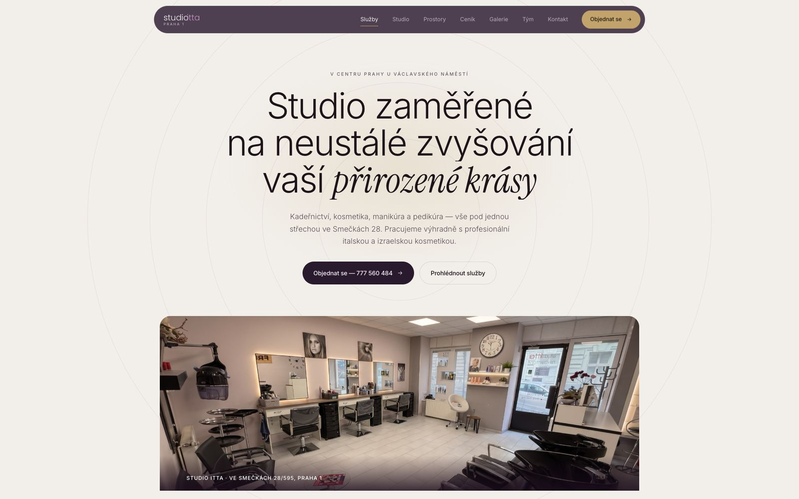
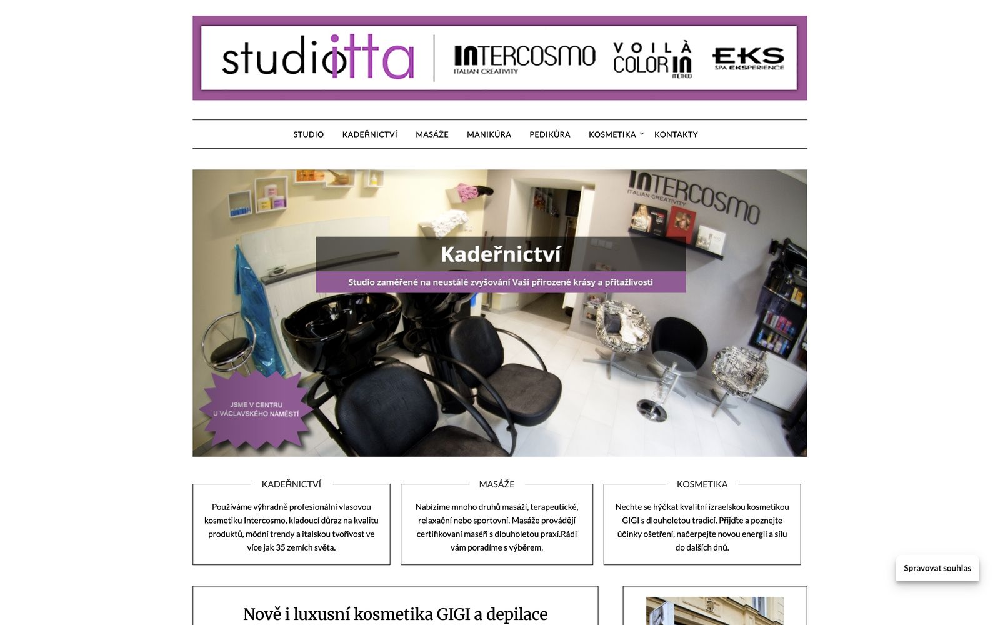
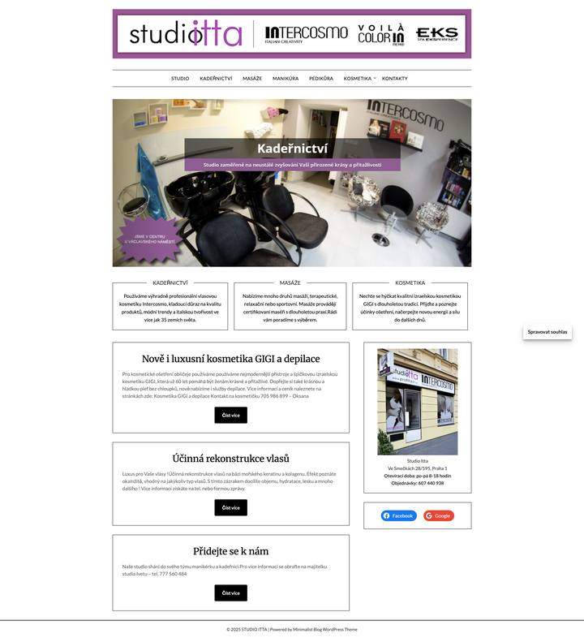
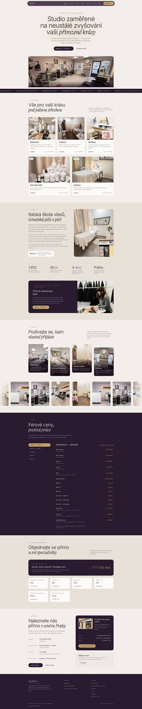
EMS a kryolipolýza · Čáslav
Studio v srdci Čáslavi, které od roku 2018 nabízí bezdrátový EMS trénink s technologií Justfit a neinvazivní kryolipolýzu Kryo Cool 360.
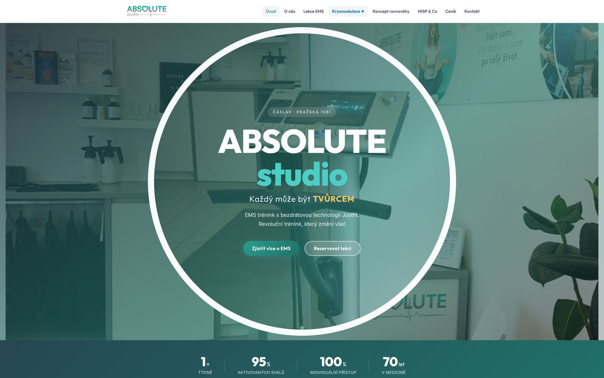
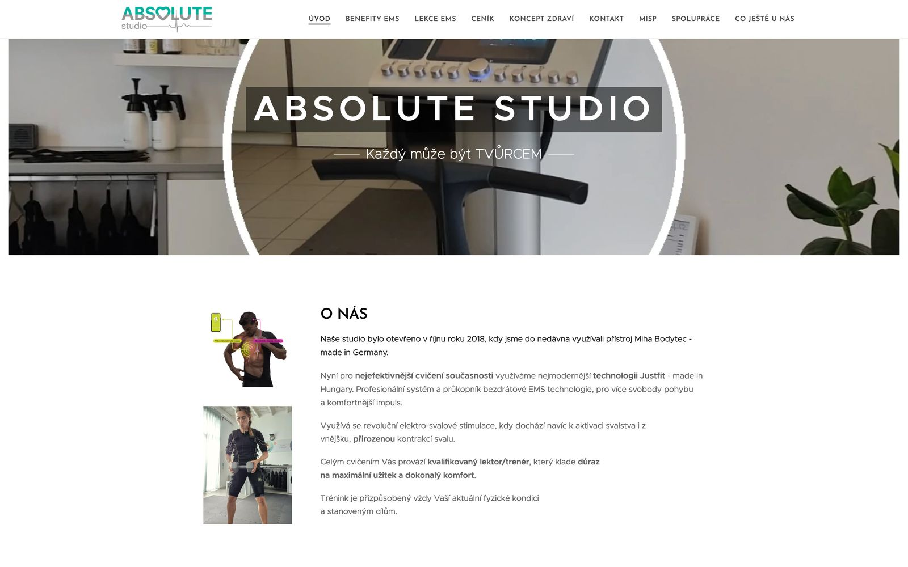
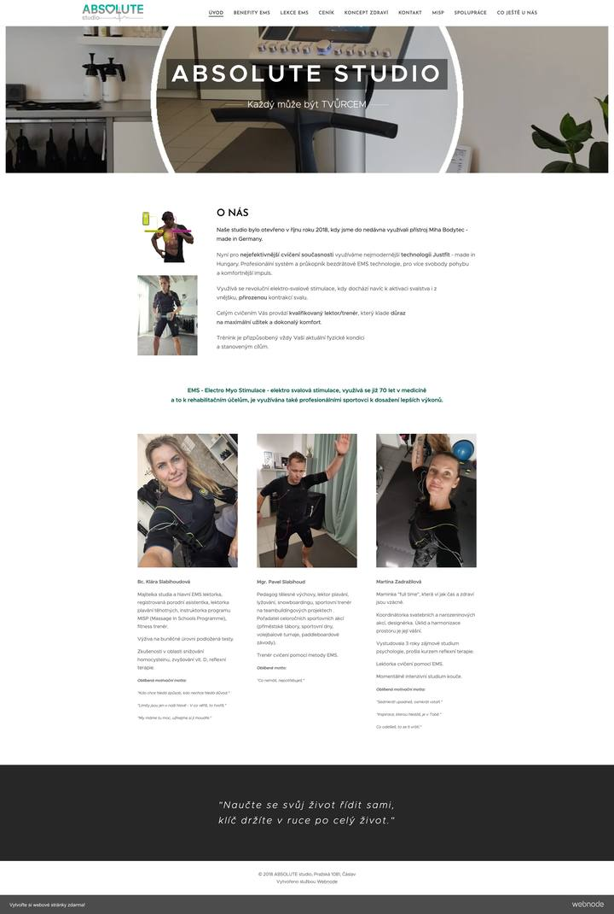
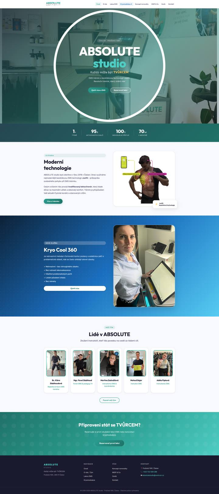
Ebenista a restaurátor nábytku · Praha
Umělecký truhlář a restaurátor historického nábytku z Prahy: ruční repase, opravy intarzií, šelakové povrchy, repliky i autorský nábytek, od roku 1988.
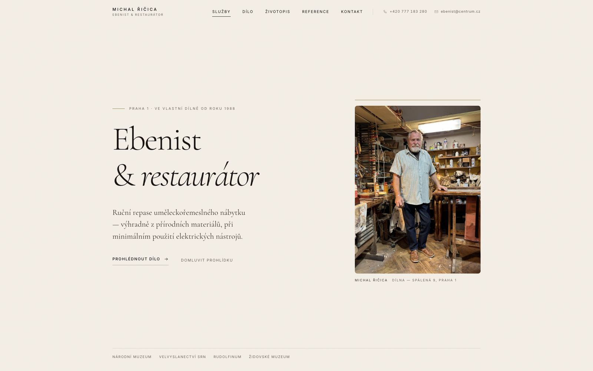
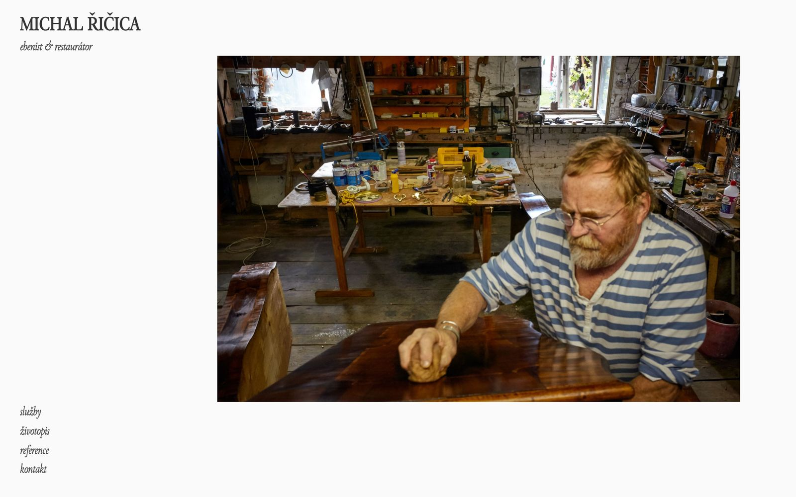
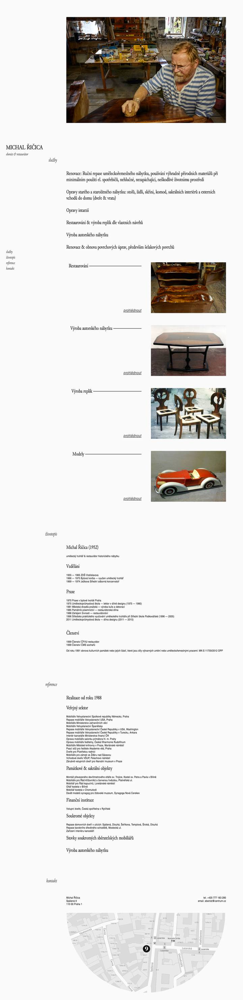
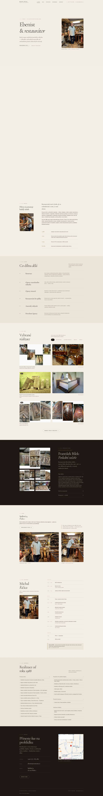
Webdesign Před a po
Pošlete nám odkaz na svůj současný web. Do 24 hodin vám zdarma připravíme návrh, jak by mohl vypadat po předělání, bez závazku a bez faktury.